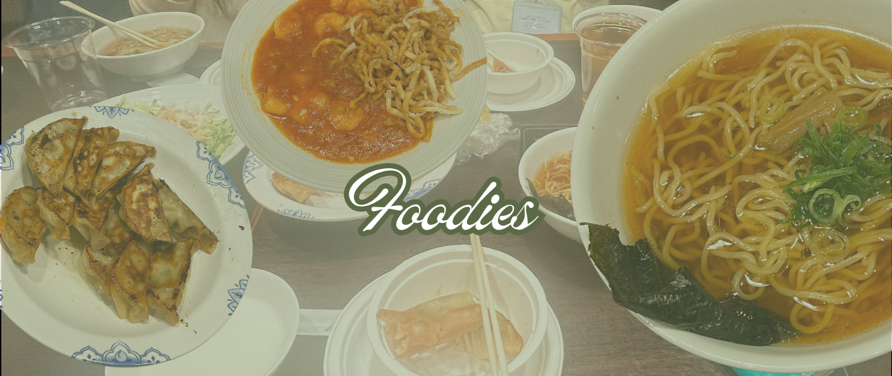
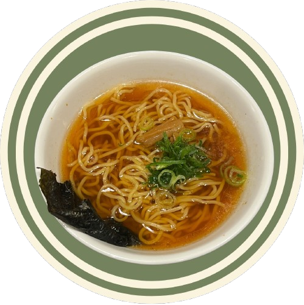
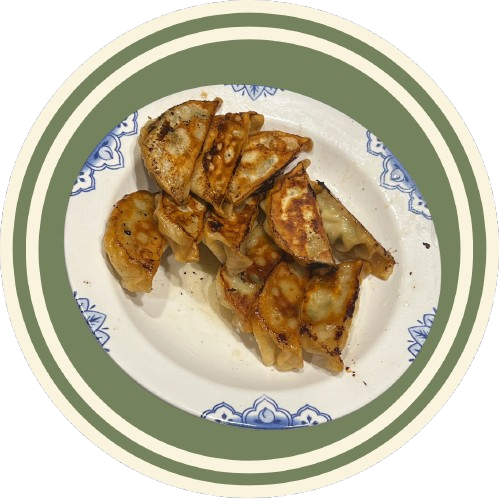
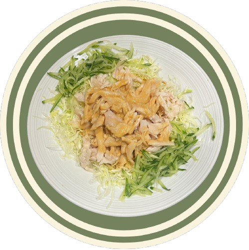
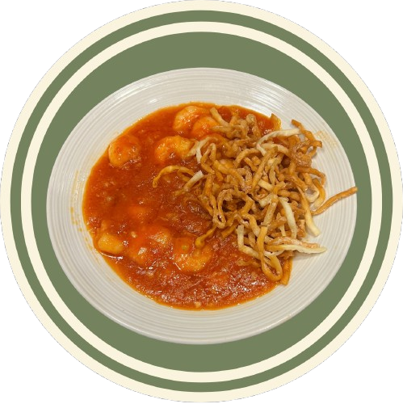
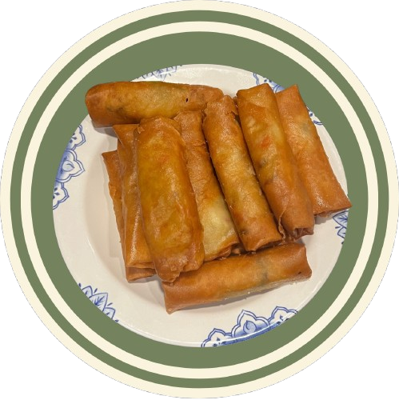
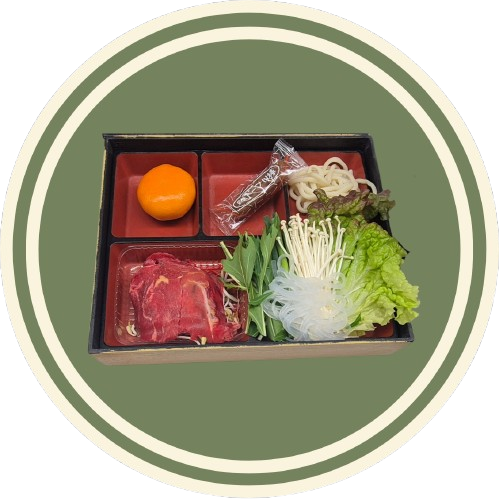

Ramen is one of the most popular and iconic dishes in Japan, loved for its rich flavors and comforting warmth. It consists of wheat noodles served in a savory broth, which can be made from pork, chicken, soy sauce, or miso. Toppings often include sliced pork, soft-boiled eggs, seaweed, and green onions. Each region in Japan offers its own unique variation, making ramen a diverse and exciting dish to explore.

Gyozas are Japanese dumplings that are crispy on the outside and juicy on the inside. They are typically filled with a mixture of ground meat, cabbage, garlic, and ginger, then pan-fried to create a golden, crunchy base. Gyoza are usually served with a dipping sauce made of soy sauce and vinegar, adding a tangy flavor that complements the savory filling. They are a favorite side dish or snack across Japan.

Chicken dishes in Japan are widely enjoyed and come in many delicious forms. One of the most popular is karaage, which is bite-sized chicken marinated in soy sauce and spices, then deep-fried until crispy. Another favorite is yakitori, where chicken is skewered and grilled over charcoal. These dishes highlight the balance of flavor and texture that Japanese cuisine is known for.

Shrimp is a common ingredient in Japanese cooking and is especially famous in tempura dishes. Tempura shrimp are coated in a light batter and fried until perfectly crispy while remaining tender inside. Shrimp is also used in sushi and other seafood dishes, valued for its slightly sweet taste and delicate texture. It adds both flavor and elegance to many meals.

Tuto is a simple rice-based dish that represents comfort and warmth in a meal. Although it is not traditionally Japanese, it pairs well with Japanese-style dishes and flavors. Its soft texture and mild taste make it a perfect base for savory toppings or side dishes. It is easy to prepare and enjoyed by many as a filling and satisfying food.

Japanese horse meat, known as baniku or "sakura niku" (cherry blossom meat) due to its color, is a popular, nutritious, and safe delicacy often served raw as basashi (sashimi), especially in Kumamoto. It is low in fat, high in iron and protein, and considered a healthy, tender meat with a mild, slightly sweet flavor.